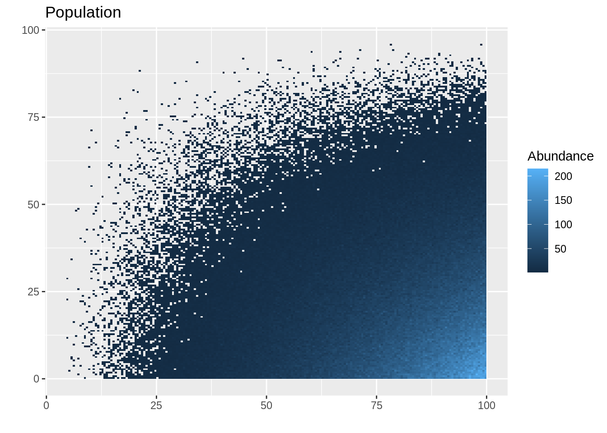
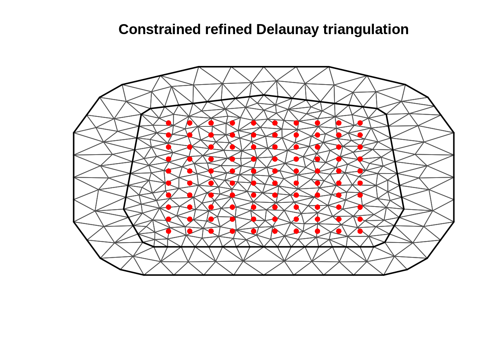
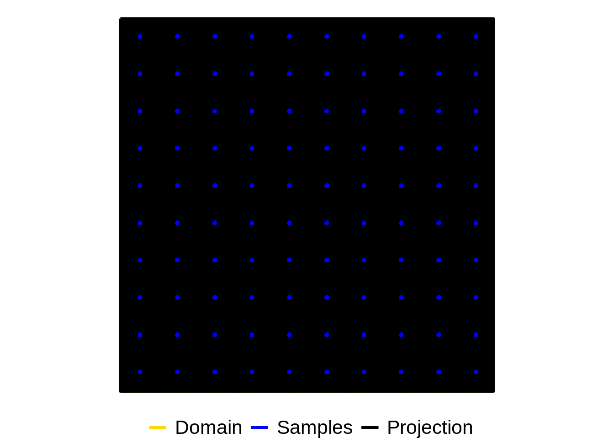

Chapter 4 Simulations with systematicsurvey
library(ggplot2)
library(INLA)
library(raster)
library(rgeos)
library(rgdal)
library(systematicsurvey)
# can install it using
## devtools::install_github("Craig44/systematicsurvey")
set.seed(123)
## Assume a square domain
survey_xlim = c(0,100)
survey_ylim = c(0,100)
# simualted population size
N = 5e5
## spatial distribution
beta1 = c(4,1)
beta2 = c(1,4)
survey_area = diff(survey_ylim) * diff(survey_xlim) # Area of survey
## create a polygon
s_poly = Polygon(cbind(x = c(survey_xlim[1],survey_xlim[1],survey_xlim[2],survey_xlim[2]), y = c(survey_ylim[1],survey_ylim[2],survey_ylim[2],survey_ylim[1])))
s_polys = Polygons(list(s_poly),1)
sp_survey_poly = SpatialPolygons(list(s_polys)) ## add projection coordinater here if you are using
survey_area = rgeos::gArea(sp_survey_poly)
survey_polygon = sp_survey_poly
## sampling unit
quad_width = 0.5
quad_height = 0.5
quad_x_spacing = 10 ## spacings between quadrant/transect midpoints
quad_y_spacing = 10 ## spacings between quadrant/transect midpoints
sampling_unit_area = quad_width * quad_height
boxlet_diameter = quad_width ## will define how many boxlets there are, should be less than quadrant size
kappa = survey_area / sampling_unit_area ## sampling fraction
## variables that define the toal number of sampling units
n_col = max(survey_xlim) / quad_x_spacing # r
n_row = max(survey_ylim) / quad_y_spacing # r
n_strata = n_row * n_col
n_l = quad_y_spacing / quad_height# l
n_k = quad_x_spacing / quad_width # k
n_quads = n_l * n_row * n_col * n_k
within_rows = rep(1:n_l, n_k)
within_cols = sort(rep(1:n_k, n_l))
## lower and upper limits for discrete non-overlapping quadrats
quad_x = seq(0,max(survey_xlim), by = quad_width)
quad_y = seq(0,max(survey_ylim), by = quad_height)
# create a raster layer with all projection spaces
proj_raster <- raster(resolution = quad_width, xmn = survey_xlim[1], xmx = survey_xlim[2], ymn = survey_ylim[1], ymx = survey_ylim[2])
proj_poly <- rasterToPolygons(proj_raster, dissolve=F)
## simulate spatial distribution
x_coord = rbeta(N, beta1[1], beta1[2]) * max(survey_xlim)
y_coord = rbeta(N, beta2[1], beta2[2]) * max(survey_ylim)
## rasterize
pop_raster <- rasterize(x = cbind(x_coord, y_coord), y = proj_raster, field = 1, fun = "sum", na.rm = T)
pop_raster_pts <- rasterToPoints(pop_raster, spatial = TRUE)
# Then to a 'conventional' dataframe
pop_df <- data.frame(pop_raster_pts)
ggplot() +
geom_tile(data = pop_df , aes(x = x, y = y, fill = layer)) +
ggtitle("Population") +
labs(x = "", y = "", fill = "Abundance")
Now simulate a two-dimensional systematic survey with a single PSU.
PSU = sample(1:length(within_cols), size = 1)
# convert cols and rows to survey units
within_x = within_cols[PSU] * quad_width
within_y = within_rows[PSU] * quad_height
upper_x1 = seq(from = within_x, to = survey_xlim[2], by = quad_x_spacing)
upper_y1 = seq(from = within_y, to = survey_ylim[2], by = quad_y_spacing)
upper_x = rep(upper_x1, length(upper_y1))
upper_y = sort(rep(upper_y1, length(upper_x1)))
sample_y_coord = upper_y - quad_height / 2
sample_x_coord = upper_x - quad_width / 2
## data frame
Data = data.frame(x_mid = sample_x_coord, y_mid = sample_y_coord)
Data$y_i = NA
counter = 1;
## population in sampling units
for(i in 1:length(upper_x)) {
Data$y_i[i] = sum(x_coord >= (upper_x[i] - quad_width) & x_coord <= upper_x[i]
& y_coord >= (upper_y[i] - quad_height) & y_coord <= upper_y[i])
}
Data$area = quad_height * quad_height
## convert to densities
Data$d_i = Data$y_i / Data$area
## convert it to spatial data frame
coordinates( Data ) <- ~ x_mid + y_mid
## can also add projection of data if working lat longs etc
# proj4string(Data) <- CRS("+init=epsg:4326")
## calculate sample raster
sample_raster <- rasterize(x = cbind(sample_x_coord, sample_y_coord), y = proj_raster, field = 1, fun = "sum", na.rm = T)
## calculate polygons
samp_poly <- rasterToPolygons(sample_raster, dissolve=TRUE)4.1 SRS estimator
srs_var_hat = kappa^2 * var(Data@data$d_i) / (nrow(Data@data))
## standard error
sqrt(srs_var_hat)## [1] 397008.64.3 Boxlet estimator
The first thing we need to do is calculate the fine lattice within \(\mathcal{D}\) (these lattice points correspond to the centroids of the so-called boxlets). This is done using the ?BoxletEstimatorSamplingFrame function. This function will return a list containing a fine lattice for all the boxlets. The other function that will calculate the boxlet variance is ?BoxletEstimator. These are applied in the following code chunk.
## build lattice that we will evaluate the variance over
## for large survey areas can take a few seconds to a minute
boxlet_frame_single = BoxletEstimatorSamplingFrame(survey_polygon, quad_width = quad_width,
quad_height = quad_height, quad_x_spacing = quad_x_spacing,
quad_y_spacing = quad_y_spacing, boxlet_per_sample_width = 1,
boxlet_per_sample_height = 1, trace = F)
## use the
boxlet_estimator_single = BoxletEstimator(spatial_df = Data, survey_polygon = survey_polygon,
quad_width = quad_width, quad_height = quad_height,
quad_x_spacing = quad_x_spacing, quad_y_spacing = quad_y_spacing,
boxlet_sampling_frame = boxlet_frame_single)
names(boxlet_estimator_single)## [1] "var_total_boxlet" "boxlet_df" "N_hat" "gam_N_hat"## standard error
sqrt(boxlet_estimator_single$var_total_boxlet)## [1] 84470.524.4 Geostatistical estimator
Build a mesh INLA mesh
mesh = inla.mesh.2d(max.edge = c(3,20), n =15, cutoff = 6,
loc.domain = SpatialPoints( data.frame(x = c(0,0,100,100),y= c(0,100,100,0))))
## don't give data points to the inla.mesh.2d function
## the triangulation mesh calculation will want to put all the vertices
## at observation locations due to the systematice shape
plot(mesh)
points(Data, col = "red", pch = 16)
Identify which cells to get the model to predict for
proj_indicator = apply(gContains(samp_poly,proj_poly, byid = TRUE), 1, any)
## visualise
colors <- c("Domain" = "gold", "Samples" = "blue", "Projection" = "black")
pop_outline = fortify(proj_poly)## Regions defined for each Polygonssample_outline = fortify(samp_poly)## Regions defined for each Polygonsdomain_area = data.frame(x = c(survey_xlim[1],survey_xlim[2], survey_xlim[2], survey_xlim[1],survey_xlim[1]),
y = c(survey_ylim[1],survey_ylim[1],survey_ylim[2],survey_ylim[2],survey_ylim[1]))
ggplot() +
coord_fixed() +
geom_path(aes(x = x, y = y, col="Domain"), data = domain_area,
size=1) +
geom_path(aes(x = long, y = lat, group = group, col="Projection"), data = pop_outline,
size=1) +
geom_path(aes(x = long, y = lat, group = group, col="Samples"), data = sample_outline,
size=1) +
labs(x = "x", y = "y", color = "")+
theme_void() +
theme(legend.position="bottom", legend.text = element_text( size = 16)) +
scale_color_manual(values = colors[1:3])
Fit the model
## create a projection data frame
proj_df <- as.data.frame(rasterToPoints(proj_raster, spatial = F))
proj_df$area = quad_width * quad_height
proj_df$y_i = 0 ## dummy variable
fit_poisson = tryCatch(
expr = SpatialModelEstimator(spatial_df = Data, formula = y_i ~ 1, mesh = mesh,
extrapolation_grid = proj_df, family = 0, link = 0, bias_correct = T,
convergence = list(grad_tol = 0.001)),
error = function(e) {e}
)